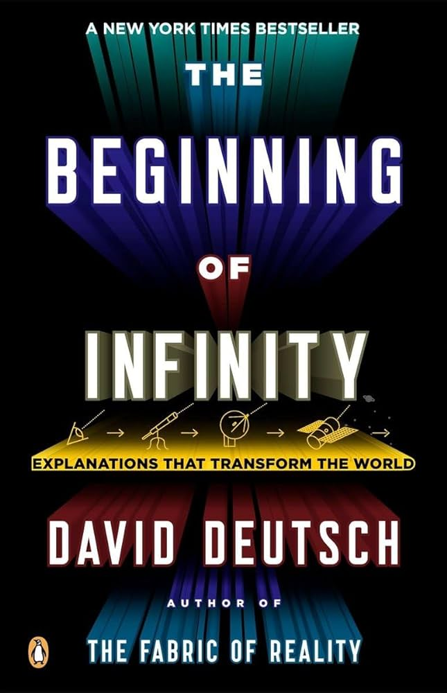
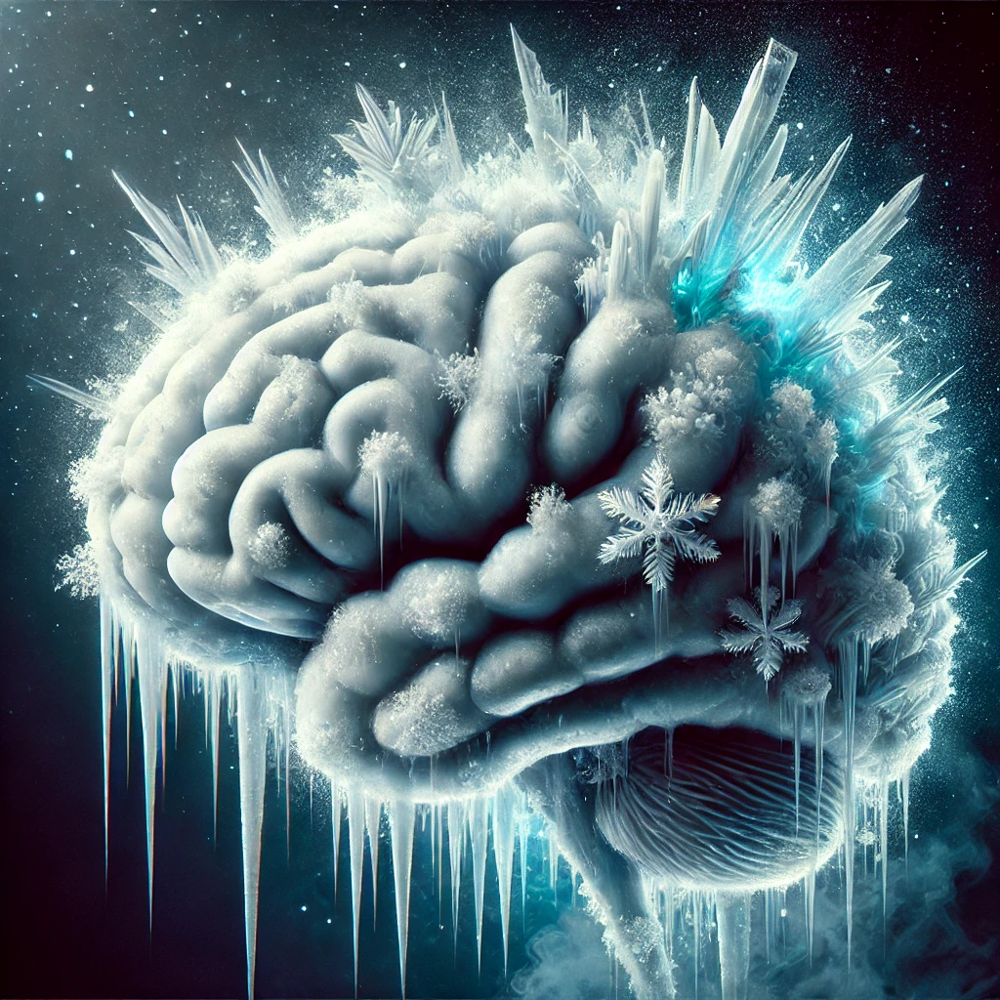
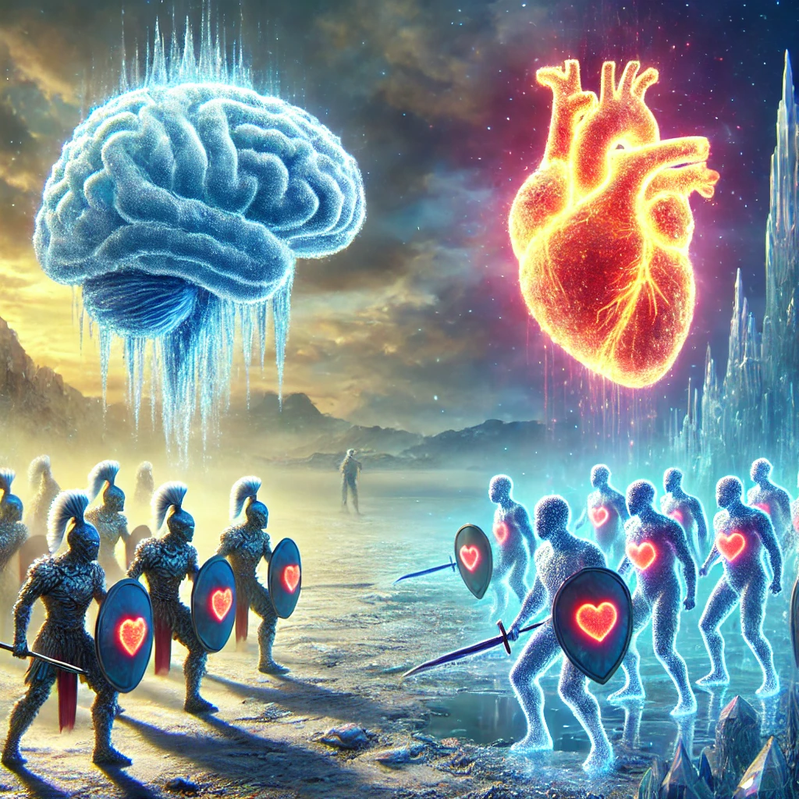

The Moral Philosophy of Icy Brains 🧊🧠
Paul Berg
Sep 28, 2024 @ RatFest
Personal Background
- 👔 Co-Founder and CEO @ Sablier Labs
- 👨💻 Software engineer for 10+ years
- 📖 Studied Deutsch's work for 3+ years as a hobby
- ℹ️ Unqualified to give a talk about this
Principle of Optimism
All evils are due to lack of knowledge.

🧊 Icy Brains

⚔️ Icy Brains vs Hearty Souls

🤔 So...
All evils are due to lack of knowledge...
or lack of conscience!
🧙 Spells of Knowledge
Both Icy Brains and Hearty Souls are universal explainers and knowledge creators.
1️⃣ HS creates knowledge to block IB
2️⃣ IB reverse-engineers it and deflects it against HS
Why make the adjustment?
- 🧬 Icy Brains will be curable with future technology
- ❓ Moral dilemma: should we cure it?
- ✅ According to the adjusted moral principle, we should
The End
Thanks! Follow me on X/ Twitter
@PaulRBerg